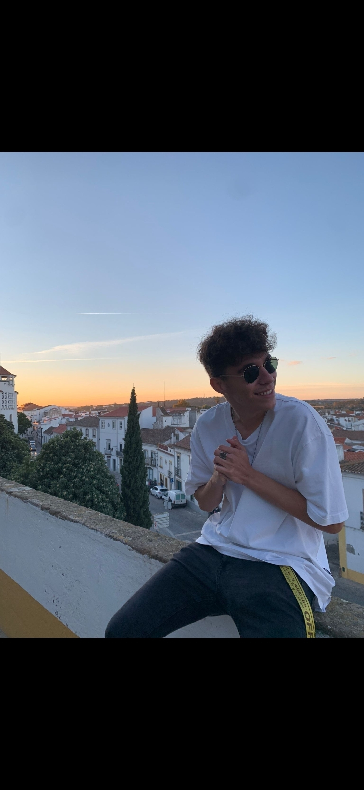

André Mendes
Desenvolvedor Full-stack
Estudante de Engenharia Informática, jogador de futsal e barman.
Os desenvolvedores por trás deste projeto
Desenvolvedor Full-stack
Estudante de Engenharia Informática, jogador de futsal e barman.